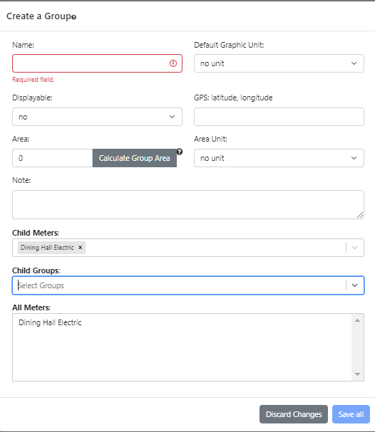

The dropdown menu when the meter "Dining Hall Electric" that collects in kWh is the only child meter is shown in the following figure. All units from Celsius and below are not compatible and grayed out.

If "no unit" is selected then this group cannot be graphed until a compatible unit is already selected. It has a default value of "no unit".
If one clicks "OK" (the default) then the value for area display will be placed in the area input and it will overwrite any existing value. If one clicks "Cancel" then nothing is changed. In this example the area is 11000 because the area of "Dining Hall Electric" is 1000, "Great Dorm 1st Floor Electric" is 5000 and "Great Dorm 2nd Floor Electric" is 5000 so the sum is 11000.
It is not required that all meters have an associated area. If a group includes such a meter then OED will give a warning when it calculates the area of the group because it cannot include anything for that meter. If the previous example was modified to include a fourth meter of "Other building" that does not have an area then the popup in the next figure would appear when you calculate the area.

As stated, the area calculated does not include anything for this meter. Note if one clicks "OK" and sets the area for this group, it is possible to manually edit this value to include any missing meters. While this example shows one meter, any meters without an area will be listed in the popup.
- Adding this meter to the group will not change the group's possible compatible units. Such meters are shown in regular font and are selectable. In the following figure, "Library Electric" and "Theater Electric" are displayed this way because they are all collecting in an energy unit (kWh) and are completely compatible with each other.
- Adding this meter to the group will change the group's possible compatible units but the reduced compatible units still include the current default graphic unit. Such meters are shown in orange font and are selectable. In the following figure, "Great Dorm Water" is displayed this way and is compatible with volume units, CO2 units and US $. This group and the already selected meter are both compatible with CO2 units and US $ so energy units will no longer be compatible. Selecting this meter is compatible with the default graphic unit because it is currently "no unit".
- Adding this meter to the group will change the group's possible compatible units so there are no compatible units. If OED allowed such a group then it could never be graphed so it is not allowed. Thus, the incompatible/non-selectable meters will be in grayed out font. In the following figure, "Library Temperature" is displayed this way because it is collecting in a temperature unit (Fahrenheit) and is not compatible only with temperature units. These are not compatible with any of the "Dining Hall Electric" meter units so there are no possible compatible units between them.

The fourth possible display state of a meter is shown in the following figure. In this case the default graphic unit was changed to kWh. As a result, the meter "Great Dorm Water" is now in red. This indicates that the compatible units would change if this meter is selected and the current default graphic unit is not one of the changed compatible units (CO2 units and US $). If this meter is chosen then the default graphic unit must be changed. OED will set the default graph unit to "no unit" and one needs to set it to a new compatible unit for this group if desired. These meters are shown in red to indicate that the group will automatically be changed. If the new meter is added to the group then a pop up will confirm the change to the group. In this example it would have "The default graphic unit was changed to no unit from "kWh"".

While the examples above use meters, any group included in this group also impacts the compatible units. Any of the meters that are in this group (see All Meters below) are included in the consideration of compatible units. Finally, a meter can always be removed from a group because it cannot reduce the compatible units so it will leave it the same or add more compatible units.
